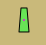

DSC und Buddy via AIS
Diese Funktion erwartet verfügbare DSC und GPSGate Buddy Nachrichten im AIS Datenstrom.
Referenz:
 DSC Station
DSC Station
 Notsignal sendende DSC Station, zu behandeln wie "Mayday"
Notsignal sendende DSC Station, zu behandeln wie "Mayday"
 GpsGate Buddy Ziel
Ein normales DSC Ziel ist ein DSC fähiges UKW Seefunk-Gerät.
Notsignal Nachricht mit DSC (Digital Selective Calling) von einem nicht identifizierten AIS Ziel.
Ein grünes Buddy Ziel auf einer Insel.
Die Ansicht der AIS Liste:
Buddy Nachrichten sind hierzulande relativ unbekannt. Es dient zur Anzeige von Positionen anderer (Personen, Boote usw.), wenn alle Beteiligten als Mitglieder (Buddies) an einem BuddyTracker Server von GpsGate.com oder einem eigenen Server, der die GPSGate Server Software verarbeitet, angemeldet sind und ihre Positionen darüber austauschen. Dieser Server muß dann in den Verbindungs-Einstellungen von OpenCPN konfiguriert sein. Die Datenverbindung läuft über Internet (TCP/IP) und nicht über AIS. Es wird nur deswegen an dieser Stelle genannt, weil die Darstellung in OpenCPN der AIS-Darstellung ähnelt. Es hat also mit AIS sonst nichts zu tun.